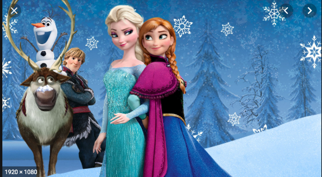

Princess Elsa of Arendelle possesses magical powers that allow her to control and create ice and snow, often using them to play with her younger sister, Anna. After Elsa accidentally injures Anna with her magic, their parents, the King and Queen, take both siblings to a colony of trolls led by Grand Pabbie. He heals Anna, but alters her memories so that she forgets about Elsa's magic. Grand Pabbie warns Elsa that she must learn to control her powers, and that fear will be her greatest enemy. The King and Queen isolate both sisters within the castle, closing the castle gates to their subjects. In an effort to protect her sister from her increasingly unpredictable powers, Elsa ceases all contact with Anna, creating a rift between them. When the sisters are teenagers, their parents are lost at sea during a storm.
SOURCE HERE 